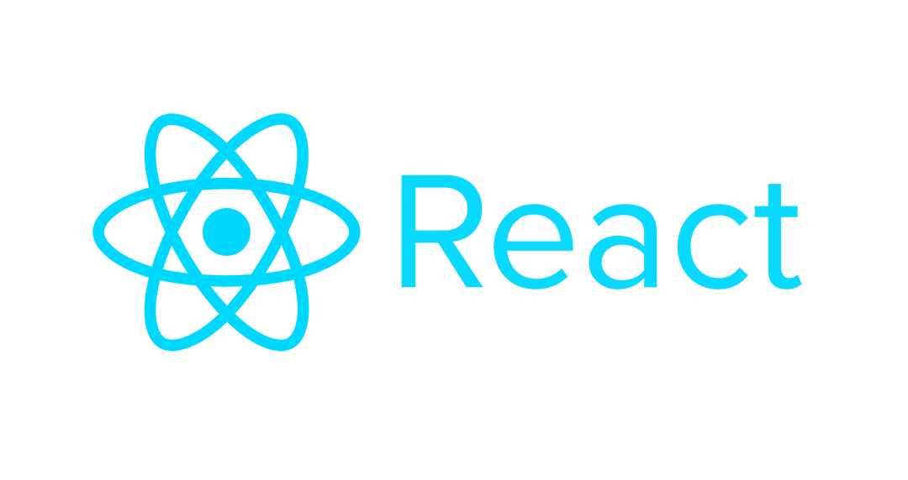
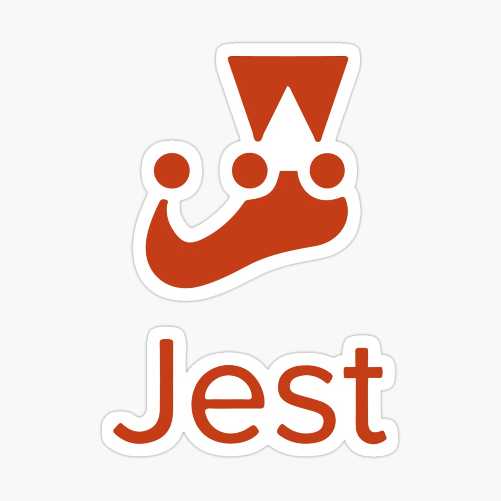

JOB DESCRIPTION
I was hired to be a part of the new SmartLockers team at the NCR Waterloo office as a Software Developer for 8 months. I primarily worked on React Web applications and utilized the in-house software to build an orchestration layer that the UI can utilize to communicate with the backend services. My day-to-day activities involved working on new feature development, bug fixing, code review, and testing on the Teller and POS Web applications. This type of work exercised my attention to detail, communication and problem-solving skills as it involved me to properly design, plan, and communicate with the team to develop new features or resolve bugs.




